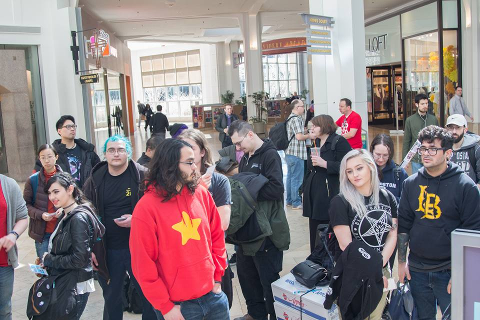
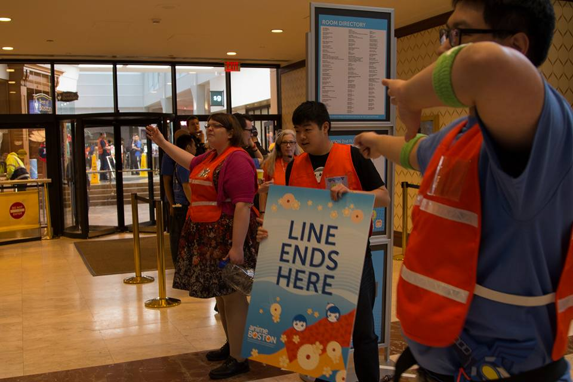

Anime Boston Volunteer Program 2016
Anime Boston is part of the non-profit called North Eastern Anime Society. The Anime Boston Volunteer Program (ABVP) is a subsection of Anime Boston in charge of assisting in providing volunteer labor for the convention as well as creating a positive experience for volunteers. Volunteer work includes things such as line control, passing out pamflits, and assisting departments in other similar work.
2017
Volunteers waiting outside the convention center for pre-con setup
Volunteer headquarters (VHQ) mid-setup
VHQ setup
Volunteer orientation

Staff presenting the schedule and rules for the weekend
Volunteers checking out for shifts
Volunteers helping string lanyards at registration
Volunteer staff deployed to solve line control situation
Volunteers helping with line control outside registration
Volunteers inflating chairs at the manga library

Volunteers handing out voting ballots at the Anime Music Video contest
Volunteers preping to help seat the main auditorium for the nights concert
Volunteers seating

Volunteers in their VIP seating for the concert given as a perk for helping
Volunteers relaxing and playing games at VHQ
Swag challenge coins for the volunteers to celebrate Anime Boston's 15th aniversery
Volunteer winning a Nintendo Switch in the volunteer raffle (proceeds go to charity)
Volunteer winning the Silver Medal of Valor for going above and beyond and assisting staff during a medical emergency
Volunteer winning patch for helping improve ABVP community
Volunteer and Staff group photo
Summer Event
For the summer event in 2017, we constructed an "escape the island" game. Volunteers were split into groups and complete challenges handed out by staff members spread across the island. Beating each challenge gave the group a unique item so they could construct a "boat" and "escape the island". The team that created a floatation device to carry the package (a heavy object) the fastest won.